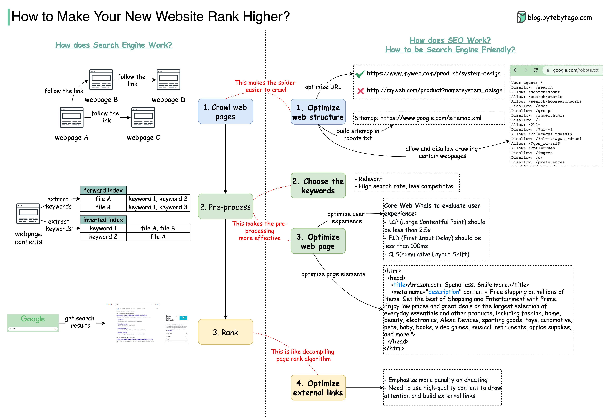

You have just developed a new website. What does it take to be ranked at the top?
We need to understand how search engines rank websites and optimize our website to be search engine-friendly. This is called SEO (Search Engine Optimization).
A search engine works in 3 stages:
The crawler reads the page content (HTML code) and follows the hyperlink to read more web pages.
The preprocessor also works in 3 steps:
It removes HTML tags and ‘Stop’ words, which are words like ‘a’ or ‘an’ or ‘the.’ It also removes other noise that is not relevant to the web page’s content, for example, the disclaimer.
Then the keywords form structured indices, called forward indices and inverted indices.
The preprocessor calculates the hyperlink relationships, for example, how many hyperlinks are on the web page and how many hyperlinks point to it.
When a user types in a search term, the search engine uses the indices and ranking algorithms to rank the web pages and presents the search results to the user.
How do we make our website rank higher in search results? The diagram below shows some ways to do this.
We need to make it easier for the crawler to crawl our website. Remove anything the crawler cannot read, including flash, frames, and dynamic URLs. Make the website hierarchy less deep, so the web pages are less distant from the main home page.
The URLs must be short and descriptive. Try to include keywords in the URLs, as well. It will also help to use HTTPS. But don’t use underscore in the URL because that will screw up the tokenization.
Keywords must be relevant to what the website is selling, and they must have business values. For example, a keyword is considered valuable if it’s a popular search, but has fewer search results.
The crawler crawls the HTML contents. Therefore the title and description should be optimized to include keywords and be concise. The body of the web page should include relevant keywords.
Another aspect is the user experience. In May 2020, Google published Core Web Vitals, officially listing user experience as an important factor of page ranking algorithms.
If our website is referenced by a highly-ranked website, it will increase our website’s ranking. So carefully building external links is important. Publishing high-quality content on your website which is useful to other users, is a good way to attract external links.